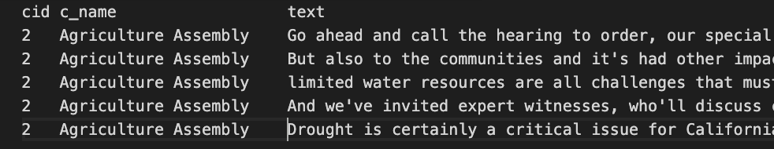

Description
The Digital Democracy project was a Cal Poly built multi-year long research project where a prototype system
was built that allowed all state-level legislative proceedings to be available in text transcriptions, and
be searchable, alertable and clippable. It began in California and expanded to Florida, New York and Texas.
It is the first and only time in US where all legislative speeches in state legislatures are transcribed.
For more infromation see: here
For this project, we used just a fraction of the enormous volume of data produced by the original project to do supervised and unsupervised machine learning exercises.
Here is a look at the raw data:
cidA unique committee or subcommittee id, used to identify an individual committee. It is unique across both senate and assemblyc_nameA name that goes with the committee or sub-committee, not necessarily unique (i.e. “Appropriations”)textWhat was actually said. This is a single "utterance"
These 3 variables were not the only ones to come in the dataset but I edited out all others because these are the 3 we focused on for the project.
Part 1 - Clustering
Goal
The committee names are already labeled for us (40 unique in total), so our goal was to try to use a clustering algorithm to naturally produce those 40 clusters. The idea is that somehow we can pick up on the differences between the committees just given what is uttered. In other words, can we figure out patterns such as words used, length of sentences, phrases used, etc, that will differentiate the committees?
Feature Selection
To do this we extracted many features from the single utterance. First we figured out what were the most common words and bigrams in the entire corpus, and added features for the count of the top n most common words (we ended up selecting n=100). To do this, we tokenized each utterance and used the porter stemmer stem function to obtain the stem of the lower case word. Finally, we removed all stop words in the nltk corpus, and removed specific unmeaningful words which we observed in the data. The stemmed words for each utterance were then used to create single and bigram features. In the case of single stem usage, we created a frequency distribution of all the stems used in every utterance, and selected the n most common stems as features. Bigrams were selected in a similar fashion, as the n most common bigrams used in all utterances. The values for these features were obtained by checking the number of times which the word or bigram appeared in an individual utterance, and adding the value to the list of features for the training example.
Next we wanted to look at the parts of speech that were used. To do this we used the NLTK pos_tag function to tag tokenized words in every utterance. For each possible tag in the pos_tag list, we appended the frequency the tag occurred in the utterance. For example, verbs would be the percentage of how frequently a verb was used in the utterance. This was then paired with grammar and sentence length features to obtain a larger picture.
The last features we used were mainly grammar-based. These included the number of sentences, the average length of a sentence, and the average length of a word. The goal of these features was to highlight committees or individuals who spoke more on average, or were more grandiose in their vocabulary.
Lastly, the features were scaled so that specific features wouldn’t dominate more than others. This was especially important since K-Means is distance based and would perform much worse on non-normalized data
Results
We originally ran k-means with a k value of 40, corresponding to one cluster per committee. When the list of cluster names was returned though, there were committees that were the names of multiple clusters, and some committees that weren’t the name of any cluster. This discrepancy could have been caused by a number of reasons. First off, some of the committees have many more entries than others. For example “Energy, Utilities and Communications” has 1864 entries, whereas the “Revenue and Taxation Assembly” has only 351 entries. So when we look at the clusters, and see that 8 of them were classified as “Energy, Utilities and Communications” we know that from the start it was more likely to be classified as “Energy, Utilities and Communications” due to the number of entries. See figure 1 for the complete list of clusters. Secondly, using a k-means algorithm to classify speech is tough to create perfectly distinct clusters because the features are not inherently numeric. K-means is useful for groups that have numeric attributes, such as length, weight, temperature, etc. but in our case, we had to translate every feature to a number of times that feature appeared in an entry. After seeing these results, we tried running k-means with various k values, but all seemed to follow the same result of having some committees overrepresented and some underrepresented. The higher the k value, the better our purity seems to be, but at diminishing returns. Our purity hovered at around .15, our average precision, recall and f1-score across all clusters were 0.016, 0.048 and 0.0218 respectively. This values reveal how poor our k-means performed relative to the decision tree.

Part 2 - Decision Tree
Goal
Part 2 is similar to part 1, but now we will use a supervised technique: Decision Trees. The overall goal (to be able to distinguish committees by their utterance) is still the same, but now the methodology is now slightly different. Now, we will split up our dataset into train and test sets, train our decision tree, and the see how good our decision tree is at predicting the committee given an utterance.
Results
We found mixed results using this methodology for feature engineering. Committees related to topics that share no similarity than most of the other committees, like Agriculture or Appropriations, had keywords that were very distinguishable from the other committees, which made them easy to identify, but we encountered more of the opposite. Most of the committees are based on common topics like economic and public wellbeing that made distinguishable keywords nearly impossible to find. Also, some committees like Veterans Affairs had so few text lines that even common words to that committee became overshadowed by larger committee that had proportionally fewer counts of those words. Because of these issues, we had a large variety of accuracy among subcommittees, with and aggregate accuracy of around 11%.
Part 3 - Speaker Attribution
Goal
The goal for part 3 is to use any machine learning technique to try to predict the name of a given speaker given one utterance. We limited the data to only the top 50 speakers with the most utterances. We tried 2 methods, a nerural network and a SVM.
Results
For the neural network, we used a sklearn perceptron with 10 hidden layers and 10 neurons in each layer, as this seemed to be the largest network we could run within the timeframe. We trained the network using the normalized features discussed previously, with a parameter of n = 10k for the individual words and bigrams. This resulted in our highest accuracy, which was about 35% for the test set, which was over 1k utterances
The support vector machine was set up to a gamma value of 0.001, and a C value of 10, which seemed to be optimal on the data. This actually improved our accuracy:
- Precision: 0.369
- Recall: 0.3023
- F1: 0.310
- Number correct: 549, Number wrong: 805
- Accuracy: 40.5%